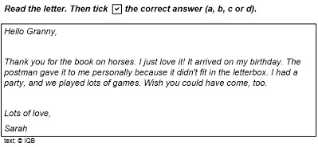
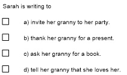

VERA-8 Englisch
Aufgabe
Letter to Granny
© IQB
| Thema | Familie/Geburtstag |
| Textsorte | Brief |
| Lesestil | global |
| Kompetenzstufe | A2 |
| Richtige Lösung | nur das 2. Kästchen wurde angekreuzt b) |
 
Diagnostisches Potenzial
Schülerinnen und Schüler, die in der Lage sind, diese Aufgabe richtig zu lösen, können die Hauptaussage kurzer, einfacher Texte zu einem vertrauten konkreten Thema verstehen. Das entspricht im Bereich des globalen Leseverstehens dem Niveau A2.
Beschreibung der Aufgabe
Bei der Aufgabe handelt es sich um eine Multiple-Choice-Aufgabe bzw. eine Aufgabe mit Mehrfachauswahl. Verlangt wird, dass ein vorgegebener Satz (Sarah is writing to …) so vervollständigt wird, dass die Schreibabsicht des Mädchens zusammengefasst wird.
Textgrundlage ist Sarahs kurzer Brief an ihre Großmutter, in dem sie sich für deren Geburtstagsgeschenk, ein Buch über Pferde, bedankt. Der verwendete Themenwortschatz „Geburtstag“ ist geläufig (birthday, party, play games). Gleiches gilt für die Wörter, die sich auf das Erhalten des Geschenks beziehen (book, arrive, postman, letterbox).
Der Text besteht überwiegend aus einfachen Sätzen. Es gibt nur zwei etwas komplexere Gefüge: den kausalen Nebensatz mit because und den elliptisch ausgedrückten Wunsch am Ende des Briefes, in dem der Irrealis could have come verwendet wird. Das Wahrnehmen bzw. Verstehen und Kombinieren der Schlüsselbegriffe thank you for (the book) und birthday ist hinreichend, aber auch Voraussetzung, um die Globalaussage aufzufinden. Um auf die Kernaussage schließen zu können, ist es erforderlich, zunächst verschiedene Textelemente zu kombinieren, um dann aus den vier vorgegebenen Lösungsmöglichkeiten die zutreffende d) thank her granny for a present auszuwählen. Diese Formulierung weist eine teilweise lexikalische Überlappung mit dem Text auf (thank for).
Mögliche Schwierigkeiten
Die Aufgabe könnte Schülerinnen und Schülern der Jahrgangsstufe 8 in verschiedener Hinsicht Schwierigkeiten bereiten:
- Die Tatsache, dass im Brief Details der Zustellung des Buches sowie der Feier erwähnt werden, könnte leistungsschwächere Schülerinnen und Schüler vom Erfassen der Kernaussage ablenken. Für eine erfolgreiche Bearbeitung der Aufgabe ist es daher notwendig, Wichtiges von Unwichtigem unterscheiden zu können.
- Es erfolgt keine Situierung der Aufgabe. Die Lernenden müssen die Kontextualisierung selbstständig während des Lesens leisten. Dazu sollten sie die Hinweise am Anfang des Briefs nutzen (birthday, postman gave it to me).
- Schülerinnen und Schüler, die den Text nur scannen, ohne ihn global zu verstehen, könnten dazu verleitet werden, eine falsche Lösung zu wählen. Alle vier Vorschläge nennen her granny als Adressatin des Briefs. Die Lernenden müssen aber erkennen, welche Absicht Sarah mit dem Brief verfolgt, also sich zwischen invite, thank, ask oder tell entscheiden. Im Zusammenhang mit dem Thema „Geburtstag“ liegt eine Einladung (Lösung a) besonders nahe. Es ist also wichtig zu verstehen, dass der Geburtstag und die Feier bereits vorbei sind. Darüber hinaus werden in den Lösungsmöglichkeiten die Begriffe des Textes party (a), book (c) und love (d) aufgegriffen. Sie könnten von b) ablenken.
Hinweise zur Bearbeitung
Zur Lösung der Aufgabe können folgende Strategien angewandt werden:
Vor dem Lesen
- Leseerwartung aufbauen und Vorwissen aktivieren: Die Überschrift (Letter to Granny) und die Aufgabenstellung (read the letter) lassen erwarten, dass ein Enkelkind an seine Großmutter schreibt und dass im Schreiben der Anlass für den Brief deutlich wird. So sind Rückschlüsse auf die Textsorte, die Funktion und den Aufbau des Textes sowie auf die Kommunikationssituation möglich (z. B. Brief, Sarah bedankt sich bei ihrer Oma; Frage: Was könnte sie ihr mitteilen wollen?). Hier können auch textsortenspezifische Kenntnisse aus dem Deutschunterricht aktiviert werden. Der themenbezogene Wortschatz (s. o.) sollte aktiviert werden.
- Anforderungen der Aufgabe ableiten: Wichtig ist, dass den Lernenden vor dem Lesen ganz klar ist, was in der Aufgabenstellung verlangt wird: Es muss verstanden werden, was Sarahs Schreibabsicht ist, damit die entsprechende Ergänzung dem Satzanfang zugeordnet werden kann.
- Angemessenes Vorgehen wählen: Nach der Klärung der Aufgabenstellung sollte die Erwartung an den Inhalt des Textes durch genaues Lesen der Lösungsmöglichkeiten konkretisiert werden (invite … party, thank … present, ask … book, tell … loves her). Dann sollten die Schülerinnen und Schüler den Text überfliegen, die richtige Lösung ankreuzen und schließlich einzelne Passagen zur Kontrolle der gegebenen Antwort nochmals genau lesen.
Beim Lesen
- Scanning-Techniken anwenden: Um beim überfliegenden Lesen den Brief systematisch zu erfassen, kann das Auge mit dem Finger von links oben nach rechts unten diagonal über die Seite gelenkt werden.
- Textsortenkenntnisse anwenden: Bei der Lektüre des Briefs sollte der Anrede sowie dem ersten und letzten Satz besondere Aufmerksamkeit gewidmet werden. Bereits der erste Satz kann die zentrale Aussage enthalten, die ggf. am Ende nochmals wiederholt wird.
- Auf Schlüsselbegriffe konzentrieren: Diese im vorgegebenen Satzanfang und in den Lösungsmöglichkeiten (s. o.) sowie im Brief (thank, book und birthday) suchen und markieren. Passagen mit Schlüsselbegriffen der Lösungsmöglichkeiten genauer lesen.
- Funktion von Sätzen erkennen: Zielführend ist es insbesondere zu erkennen, dass Sarah im ersten Satz einen Dank ausspricht.
- Bei Verständnisschwierigkeiten weiterlesen: Wenn sie Probleme beim Verstehen haben, sollten die Schülerinnen und Schüler dennoch weiterlesen bzw. den Text mehrmals lesen. Dabei sollten sie für die Lösung irrelevante Informationen ignorieren (z. B. it didn’t fit in the letterbox).
- Wortbedeutungen erschließen: Die Bedeutung von fit in könnte aus dem Zusammenhang erschlossen, present ggf. aus dem Deutschen abgeleitet werden.
Nach dem ersten Lesen
- Schlussfolgern: Zum Bestimmen der Kernaussage muss die Bedeutung von present aus Einzelinformationen erschlossen werden. Hilfreich ist hierbei Sarahs Formulierung thank you for the book.
- Antwort genau prüfen: Nach dem ersten Lesen sollten die Schülerinnen und Schüler ihre Lösung durch erneutes Nachlesen abgleichen und ggf. korrigieren.
Weiterarbeit und Förderung
Bei richtiger Lösung
Weiterführend können umfangreichere/schwierigere Texte, z. B. Erlebnisberichte oder auch Texte mit abstrakteren Themen global gelesen werden. Dem Schlussfolgern sollte ein höherer Stellenwert zukommen. Es können z. B. Fragen gestellt werden, die auf eine Wertung oder implizit ausgedrückte Emotionen abzielen.
Um das globale Leseverstehen zu entwickeln, sind auch Übungen wichtig, die nur wenig Zeit für das Überfliegen des Textes vorsehen. Ein methodisches Vorgehen wäre hier, den Text nach Ablauf der vorgegebenen Zeit umzudrehen und dann die Hauptaussage aufschreiben zu lassen, ohne dass dabei der Text nochmals angesehen werden kann. Die Aussagen können gesammelt und nach erneutem Lesen mit dem Lesetext abgeglichen werden. Die Lernenden könnten auch zu einem bestimmten Thema englischsprachige Online- oder Zeitungsartikel mitbringen und die Hauptaussage für die Klasse zusammenfassen. So kann das Interesse für weiterführendes arbeitsteiliges detailliertes Lesen geweckt werden.
Bei falscher Lösung
Sind Schülerinnen und Schüler nicht in der Lage, diese Aufgabe zu lösen, sollte mit ihnen besprochen werden, wie sie bei der Bearbeitung vorgegangen sind. Dabei sollten unterschiedliche Strategien und die Möglichkeit ihrer Kombination thematisiert werden. Die Lernenden könnten selbstständig ein Lesezeichen oder ein Lernposter mit Tipps zum globalen Lesen anfertigen.
Begriffe und Wendungen, die nicht verstanden werden, können weniger leistungsstarke Schülerinnen und Schüler verunsichern. Wenn sie beim Lesen Verstehensinseln und ihre Funktion herausarbeiten (also alles markieren, was sie verstehen), können sie Ängste vor dem Nichtverstehen abbauen.
Es ist wichtig, dass die Lernenden zwischen globalem und detailliertem Textverständnis, bei dem es auf jedes einzelne Wort ankommen kann, unterscheiden lernen. Zentral ist es in diesem Zusammenhang, die Konzentration auf wesentliche Textaussagen zu üben. Diese können verdeutlicht werden, wenn alle Informationen, die für die jeweilige Aufgabe nicht relevant sind, ausgestrichen werden dürfen. So können die Schülerinnen und Schüler erfahren, wie viele bzw. welche Informationen sie vernachlässigen können. Das kann helfen, mit Unsicherheiten umzugehen, die wegen nicht verstandener Details entstehen.
Um Strategien des globalen Leseverstehens gezielt zu trainieren, bietet es sich an, als Textgrundlage zunächst noch weitere konkrete, eher kürzere, einfachere Texte zu bekannten Themen einzusetzen. Anhand dieser Texte kann z. B. geübt werden, eine Leseerwartung aufzubauen, indem ausgehend von Bildern oder Überschriften Hypothesen über den Textinhalt gebildet werden. Auch können vor der Lektüre eines Textes Schlüsselbegriffe präsentiert werden, damit die Schülerinnen und Schüler auf dieser Grundlage überlegen, worum es im Text gehen könnte. Denkbar ist auch, dass sie zunächst eigene kürzere Texte mit diesen Begriffen verfassen. Die eigenen Erwartungen, Überlegungen und Produkte werden dann mit der Aussage des Lesetextes abgeglichen.
Zuordnungsübungen sind besonders gut geeignet, um das globale Leseverstehen zu schulen. Bevor eine passende Überschrift oder Aussage gewählt werden kann, muss die zentrale Aussage eines Textes erfasst werden.
Einige Beispiele für solche Aufgaben:
- Texte von Schildern, Postern oder Anschlägen entsprechenden Bildern zuordnen
- Cover-/Klappentexte entsprechenden CD-, DVD- oder Buchtiteln zuordnen
- Problemen, Fragestellungen oder Briefen an eine Agony Aunt schnell passende Artikel, Briefe, Antworten oder Beiträge aus Chatforen zuordnen
- Fragen eines Interviews entsprechenden Antworten zuordnen
- Bezeichnungen von Textsorten schriftlichen Produkten (Artikeln, Leserbriefen, E-Mails, Berichten) zuordnen.